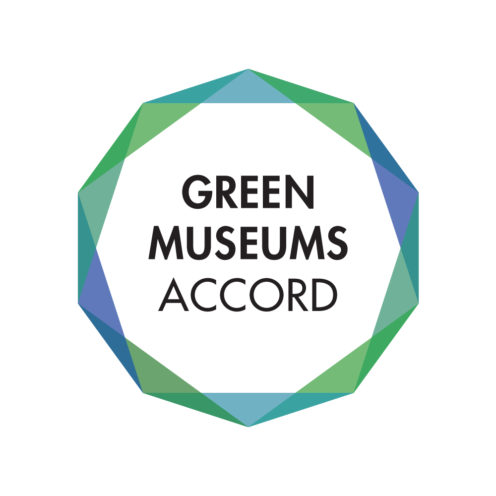

The Green Museums Accord is a group that is dedicated to improving the sustainability of museums all over the nation. A museum or institution can pledge to join the accord by taking a series of five action steps. I design the logo with these five steps in mind. The decagon shape is an allusion to the five steps (as ten is a multiple of five) and the layered triangles are a reference to the complexity and sophistication of the accord.
A spinning brochure detailing the five action steps to join the Green Museums Accord. These can be passed out at conferences or conventions as quick informational pieces.